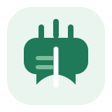
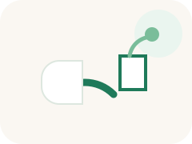
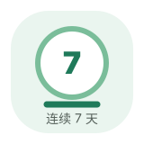

选择词库开始
美音优先
打开词库后显示释义
构词法
例句 / 搭配
跟读评测
状态：未开始
当前版本仅支持朗读播放与词汇复习，跟读评测为后续功能

CET Reader
CET Reader
专业让积累更准，高效让备考更稳
版本 加载中
上午好，同学
今日学习进度
学习时长 0 分钟
当前词库
请稍候
可学 0 条 · 已移除 条

打开词库后显示释义
状态：未开始
当前版本仅支持朗读播放与词汇复习，跟读评测为后续功能当前发音来源：检测中
正在检测语音能力...
正在检测当前浏览器...
微信/QQ 内置浏览器可能限制朗读或离线能力，但不会阻止你继续学习。
缓存状态：检测中
上次刷新：暂无记录
用本地服务器或 GitHub Pages 打开后可启用离线缓存。
PWA 版本会把用户导入词库保存到 localStorage；Word 文件建议先另存为 txt 或 csv 后导入。